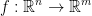
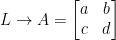

Created Wednesday 17 June 2020
We continue on from yesterday's lecture titled Linear Functions Matrices.
Recap
So, we have the following function for linear functions:

To be a linear function, we have two properties that must hold.
The first is:
Next, we have this: 
Putting this together, we have:
Not only this, every linear function corresponds to a matrix.
So then, let us have function T that takes a vector Rn. This corresponds to a matrix A like so:
As you may have noticed, we can take our linear function T and turn it into a matrix. Then, to compute whatever T is supposed to be computing we just multiply it by some input vector such as x. My terminology might not be the best here but that is the general idea.
Now then, what is A? Well, it is this:
We will have as many columns as our Rn. So, n columns.
As for rows, we will have m as per our Rm.
So then, A will be a mxn matrix.
As an extra bit of information, each T(ei) corresponds to the image of the basis vector for the domain (that would be from Rn).
Examples
Now we will go over two last examples and then we will be done with linear matrices.
Let us have the following:

Which will give us this:
As you can hopefully see, we take a vector of 2 dimensions and our linear function will give us a vector of 3 dimensions!
First things first, we must check if T is linear. This consists of just checking if the conditions for a linear function we defined earlier to be true for T.
Next, we must find the matrix A that corresponds to our linear function. In our case, that would be (1, 0) and (0, 1).
Plugging in the basis vectors, we have:

Armed with this knowledge, we can then begin creating our matrix A. Please note, it will be a mxn matrix so, in our case, we will have a 2x3 matrix.
An easy way to remember how to create this matrix is that the resulting vector for each image of the basis vectors will become the row. Likewise, the number of basis vectors will be the columns. As such, we have this:
Huzzah! This is our matrix that corresponds to our linear function T.
Now, we should check if any vector passed to T gives us this matrix. In other words:
Rotations
Suddenly, we are now learning about rotations. That's pretty cool stuff uwu.
I'm certain we all know what rotation means but I like this concise definition that the professor gave: rotation is moving the position of a point around an origin and keeping the same distance. So, we change the direction of a vector and that's it. Length stays the same.
Working in R2, we shall have the following:
What the diagram is saying is that if we have a vector (x, y) of length r then we can rotate it by a degree of a to achieve a new vector (x', y'),which reads as x prime and y prime, of the same length r.
Also, in case you didn't notice we used trig identities to simplify the equations for x' and y'.
Now then, as per the theme of this topic we can now turn this into a matrix! Then, all we have to do is multiply our vector by this matrix to rotate it. Uber sweet! Great for vidya gaymes n stuff.
Now then, as you can probably tell we have a matrix that rotates a vector by rotation a centered around the origin (0, 0). And of course, that matrix is the following:
This only works on the plane R2.
So then, let's say we want to rotate the vector (3, 5) by 30 degrees in radians so π / 6. We'd then plug in like so:
And then you do some good old matrix multiplication. To save time, I'll let you compute this yourself. I spend way too much time on these notes...
Rotation in 3D
Now things get a little more complicated. For R2 rotation, we could make due with just a single point (albeit I referred to it as a vector earlier). In R3, we shall have a vector and be dealing with axis.
Just as before, we have a rotation matrix. Here it is for 3D:
If you look carefully, that's mighty similar to our rotation matrix for 2D now isn't it? We just added some 0s and a 1. This pattern also goes into R4 but we won't be covering all of that thankfully.
An Important Theorem
First, our professor sketches this:
Nothing too strange here. Good ol' composite functions.
The f and g he draws next to the arrows symbolize functions that go from one space to another by the way.
Next, he draws this:
Remember, L' is read as, "L prime."
So then, the composition of a linear function corresponds to the multiplication of the correspondant matricies. This is very important for the chain rule. Which we shall use to help us calculate derivatives.
Proof
Now he wishes to prove to us that this is all true. Based on the last diagram, we have this:
Let 
This in turn implies the following:
Let us also have
Notice we use A' instead of B as we did in the last diagram. I'm not sure why he decide to write it this way but here we are.
Just like before, this also implies the following:
Proof Continued
Now then, remember the triangle looking shape from the last diagram? Well, let's get to proving that it really does work!
Observe the following:
Just as we did in the triangle, we passed our input into L and then passed that into L'.
Likewise, we also have this:
Coo. That's pretty coo imo.
What this all boils down to is the following:
Which in turn gives us this:
{kind=link}
{kind=link}
{kind=link}
{kind=link}
{kind=link}
{kind=link}
{kind=link}
{kind=link}
{kind=link}
{kind=link}
{kind=link}
{kind=link}
{kind=link}
{kind=link}
{kind=link}
{kind=link}
{kind=link}
{kind=link}
{kind=link}
{kind=link}